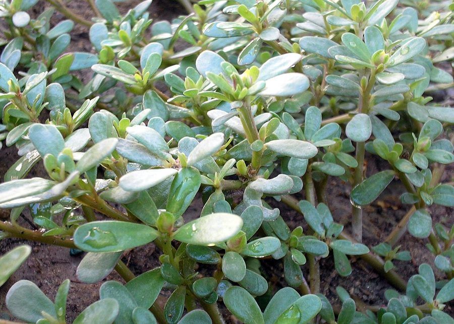

कुल्फाPurslane
Portulaca oleracea · Portulacaceae · FLR-0116

- Scientific name
- Portulaca oleracea L.
- Family
- Portulacaceae
- Hindi
- कुल्फा
- Status here
- native
- IUCN
- not evaluated
When to look कब देखें
Expected mainly in March, April, May, June, July, August, September, October.
Uses and possibilities उपयोग और संभावनाएँ
“Traditional medicine” means a documented traditional use, not a claim that it works. Nothing on this page is medical advice.
Drawn from the documented uses in the profile below, where each is labelled traditional, current or a research lead. All uses →
कुल्फा / Purslane
Portulaca oleracea L. — Portulacaceae
कुल्फा — गरमी की तपती ज़मीन पर फैला मांसल, लाल तने और मोटी चम्मच जैसी पत्तियों वाला पौधा, जिस पर सुबह-सुबह छोटे पीले फूल खुलते हैं और दोपहर से पहले बंद हो जाते हैं। यह खरपतवार भी है और साग भी — खट्टा, कुरकुरा, लोहे और ओमेगा-3 से भरपूर। दुनिया भर में खाया जाता है, और यहाँ के बुज़ुर्गों को "लोनिया का साग" याद है।
Quick Identification त्वरित पहचान
| Feature | Description |
|---|---|
| Habit | Prostrate, mat-forming annual 10–40 cm across, from a single root, fleshy throughout |
| Stem | Smooth, succulent, reddish to purple, round, branching |
| Leaves | Thick, flat, spoon- or wedge-shaped, 1–3 cm, glossy, mostly alternate but clustered at the tips |
| Flowers | Yellow, 5 petals, 5–8 mm, sessile among the leaf tips, open only in morning sun |
| Fruit | A tiny capsule whose top lifts off like a lid, releasing many glossy black seeds |
| Taste | Sour and salty, crisp |
Field tip: On hot bare ground in summer, in a vegetable bed or a paving crack, a reddish fleshy mat with spoon-shaped leaves. The lidded seed capsule and the morning-only yellow flowers settle it. Taste a leaf: sour, like a mild tamarind.
हिंदी — कैसे पहचानें: गरमी में तपती ज़मीन पर फैला लाल, मांसल तना, मोटी चम्मच जैसी चिकनी पत्तियाँ, सुबह खुलने वाले पीले फूल, ढक्कन जैसे खुलने वाले फल। पत्ती चखिए — खट्टी-नमकीन।
Morphology आकारिकी
Biometrics (Indian plains):
| Measurement | Range |
|---|---|
| Spread | 10–40 cm |
| Stem thickness | 2–5 mm |
| Leaf | 1–3 × 0.5–1.5 cm |
| Flower diameter | 5–8 mm |
| Capsule | 3–5 mm |
| Seeds per plant | up to tens of thousands |
Stems and leaves: Succulent, storing water; the leaves lack stalks and have a thick waxy cuticle. The plant uses C4 photosynthesis by day and can switch to CAM, closing its pores and fixing carbon at night, under drought, an unusual combination that explains its ease in the hottest weeks.
Flowers: Small, with two sepals, five notched yellow petals and 7–12 stamens; self-pollinating, opening for a few hours on bright mornings.
Fruit and seed: A circumscissile capsule (a pyxis) whose cap falls to shed dozens of tiny black seeds that stay viable in soil for decades.
हिंदी: तना और पत्ती पानी जमा रखते हैं; गरमी और सूखे में यह दिन में साधारण ढंग से और रात में कैक्टस की तरह साँस लेता है। फूल कुछ घंटे खुलता है और खुद परागित हो जाता है; फल का ढक्कन खुलकर सैकड़ों काले बीज गिराता है जो दशकों ज़िंदा रहते हैं।
Behaviour & Ecology व्यवहार और पारिस्थितिकी
A world weed and a world vegetable, probably native to the Old World subtropics including India, now on every continent. It owns the hottest, driest weeks of the year on bare irrigated soil: it germinates when the ground is too hot for most seedlings, grows flat so it is never trodden down, and seeds in a few weeks. Hoeing spreads it, since cut stems root again.
Ants carry the seed; sparrows and munias eat it; the plant feeds a few caterpillars and the sawfly larvae that are sometimes used against it. Tortoises and poultry relish it. It is one of the few summer greens that grows without being planted.
हिंदी: दुनिया भर की खरपतवार और दुनिया भर की सब्ज़ी, शायद भारत समेत पुरानी दुनिया की मूल। साल के सबसे गरम हफ़्तों में, जब और बीज नहीं फूटते, यह उगता है। कटा तना फिर जड़ पकड़ लेता है इसलिए निराई से बढ़ता है। चींटियाँ बीज ले जाती हैं, गौरैया खाती है, मुर्गियाँ चाव से चुगती हैं।
Life Cycle / Phenology जीवन चक्र
| Month / season | Event |
|---|---|
| March–April | First germination on warming irrigated ground |
| May–June | Peak growth in the heat; flowering within 3–4 weeks of germination |
| July–September | Continues through the rains where drainage is good |
| October | Last seed; plants collapse with cooler nights |
| November–February | Absent; seed dormant in soil |
हिंदी: मार्च से उगता है, गरमी में सबसे ज़्यादा, बरसात में चलता रहता है, ठंड आते ही ख़त्म; बीज मिट्टी में सोए रहते हैं।
Associated Species / Interactions संबंधित प्रजातियाँ
- Summer bed companions: Spiny Amaranth, Nutgrass, Asthma Weed, Doob Grass.
- Seed eaters: House Sparrow, munias, ants.
- Neighbours in the sun: Tridax Daisy, Prickly Chaff Flower.
Pests and Diseases कीट और रोग
- A sawfly (Schizocerella pilicornis) and a leaf-mining weevil feed on it and have been considered as biological controls.
- White rust and a stem-rot fungus in wet weather.
Agricultural / Human Relevance कृषि प्रासंगिकता
Traditional and Ethnobotanical Use (documented uses; not medical advice):
- Food. The leaves and young stems, raw or cooked, as kulfa ka saag and in dal and raita; in the Middle East, the Mediterranean and Mexico a standard vegetable. It is among the richest leafy sources of the omega-3 fatty acid alpha-linolenic acid, with good iron, vitamin C and potassium; also high in oxalates, so people prone to kidney stones eat it in moderation.
- Traditional medicine. The plant as a cooling diuretic and for burns, scurvy and urinary complaints, in Kirtikar & Basu and Chopra; the seeds likewise.
- Fodder and poultry. Fed to cattle and much liked by hens.
- Weed. Troublesome in summer vegetables and nurseries, mainly by sheer numbers and by rooting from fragments.
Today. Cultivated as a vegetable in some Indian cities and across the world; in the villages of the district, a remembered green that is now mostly pulled and thrown away.
Research direction (a lead, not a result). Purslane's omega-3 content is well documented and has made it a candidate "neglected and underutilised" crop in FAO and Indian reviews; agronomy for cultivation exists. The lead here is not scientific but social: a nutritious green that grows free in the hungriest season, and the knowledge of eating it is one generation from being lost.
हिंदी: साग — खट्टा, कुरकुरा, ओमेगा-3, लोहा और विटामिन सी से भरपूर; पथरी वालों के लिए कम मात्रा में। वैद्यक में ठंडक और पेशाब की दवा। मुर्गियों का प्रिय चारा। दुनिया में सब्ज़ी की तरह उगाया जाता है, यहाँ उखाड़कर फेंका जाता है — और जिस पीढ़ी को "लोनिया का साग" याद है वह बूढ़ी हो रही है।
Expected Locally स्थानीय रूप से अपेक्षित
Not a field record. Written from published accounts for eastern Uttar Pradesh. No confirmed local sighting yet — if you have seen it, that is what the atlas needs.
अभी तक स्थानीय पुष्टि नहीं। यह विवरण प्रकाशित स्रोतों से है, किसी अवलोकन से नहीं।
To be expected in every irrigated vegetable bed, courtyard and sandy bank across the district from April to October, and nowhere in winter. A photograph of the mat with flowers and lidded capsules is a confirmed record.
Distribution वितरण
Global range: Cosmopolitan in warm regions; probably native to the Old World from the Mediterranean to India.
In India: Throughout the plains and hills to about 2,000 m.
In Uttar Pradesh: Common everywhere in the hot months.
In Basti district / eastern UP: Expected wherever ground is bare and watered in summer.
Research Questions शोध प्रश्न
Anyone can investigate these | कोई भी इन प्रश्नों की जाँच कर सकता है
- Who in the village remembers eating lonia saag, and how was it cooked? / गाँव में लोनिया का साग किसे याद है, और कैसे बनता था? — Ask the oldest women; write the recipe down.
- At what time do the flowers open and close? — Check a plant every hour on a clear morning.
- Does a cut stem root again? / कटा तना फिर जड़ पकड़ता है क्या? — Lay cut pieces on damp soil and watch for a week.
- How many seeds does one plant make? — Collect the capsules of one plant over its life and estimate.
- Do hens prefer kulfa to other weeds? — Offer a handful of each and watch.
Similar Species मिलती-जुलती प्रजातियाँ
| Species | How to tell apart | हिंदी |
|---|---|---|
| Garden purslane, moss rose (Portulaca grandiflora) | Cylindrical needle leaves, large showy pink or orange flowers; planted in pots | सुई जैसी पत्ती, बड़े रंगीन फूल |
| Horse purslane, santhi (Trianthema portulacastrum) | Leaves opposite and unequal in pairs, flowers pink and hidden, stems not so fleshy | पत्तियाँ जोड़े में असमान, गुलाबी फूल |
| Spurges (Euphorbia) on the same ground | Milky sap, not succulent, no lidded capsule | दूध निकलता है |
Field rule: A fleshy reddish mat with spoon-shaped glossy leaves, morning yellow flowers and a seed capsule that opens like a lid is kulfa; milky sap or needle leaves mean something else.
Taxonomy & Classification वर्गीकरण
Original description. Linnaeus, Species Plantarum 1: 445 (1753). Portulaca is the classical Latin name; oleracea, "of the kitchen garden".
Subspecies. Several subspecies have been described on seed and habit, including the cultivated large-leaved sativa; most authors treat the wild plant as one variable species.
Family and order placement. Portulacaceae, order Caryophyllales; after molecular rearrangements the family contains only Portulaca, about a hundred species of succulents.
Phylogenetic notes. Portulaca is the sister group of the cacti and the Anacampserotaceae; the combination of C4 and CAM photosynthesis in one plant has made it a model for the study of how these pathways evolved.
IUCN status rationale. Not evaluated. A cosmopolitan weed and vegetable.
Photo Gallery फोटो गैलरी
Photos needed आवश्यक फोटो
- [ ] Mat on bare summer ground (पौधा)
- [ ] Open flower in the morning (फूल)
- [ ] Lidded capsule and black seeds (फल और बीज)
Atlas Connections संबंधित प्रजातियाँ
- Bathua and Spiny Amaranth — the other wild greens of the field
- Nutgrass and Asthma Weed — its companions in the summer vegetable bed
- House Sparrow — eats the seed
References संदर्भ
- Linnaeus, C. (1753). Species Plantarum, vol. 1, p. 445. Stockholm. [original description]
- Hooker, J.D. (1874). The Flora of British India, vol. 1. L. Reeve, London.
- Duthie, J.F. (1903). Flora of the Upper Gangetic Plain, vol. 1. Government Printing, Calcutta.
- Kirtikar, K.R. & Basu, B.D. (1935). Indian Medicinal Plants, 2nd ed., vol. 1. Lalit Mohan Basu, Allahabad.
- Chopra, R.N., Nayar, S.L. & Chopra, I.C. (1956). Glossary of Indian Medicinal Plants. CSIR, New Delhi.
- Council of Scientific and Industrial Research (1969). The Wealth of India: Raw Materials, vol. 8 (Ph–Re). CSIR, New Delhi.
- Simopoulos, A.P., Norman, H.A., Gillaspy, J.E. & Duke, J.A. (1992). Common purslane: a source of omega-3 fatty acids and antioxidants. Journal of the American College of Nutrition 11(4): 374–382.
- GBIF Occurrence Data — Portulaca oleracea, India (2026).
Source file: species/flora/weeds/kulfa.md